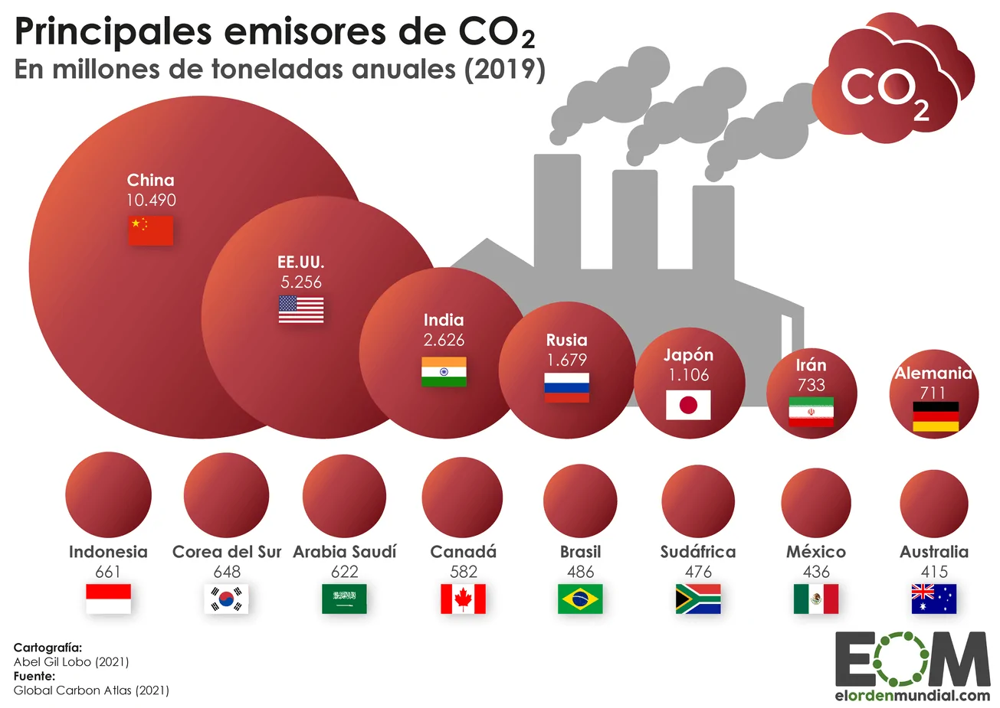
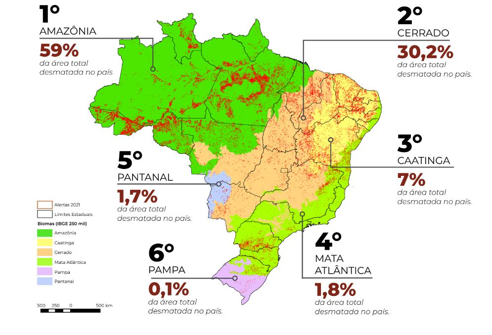
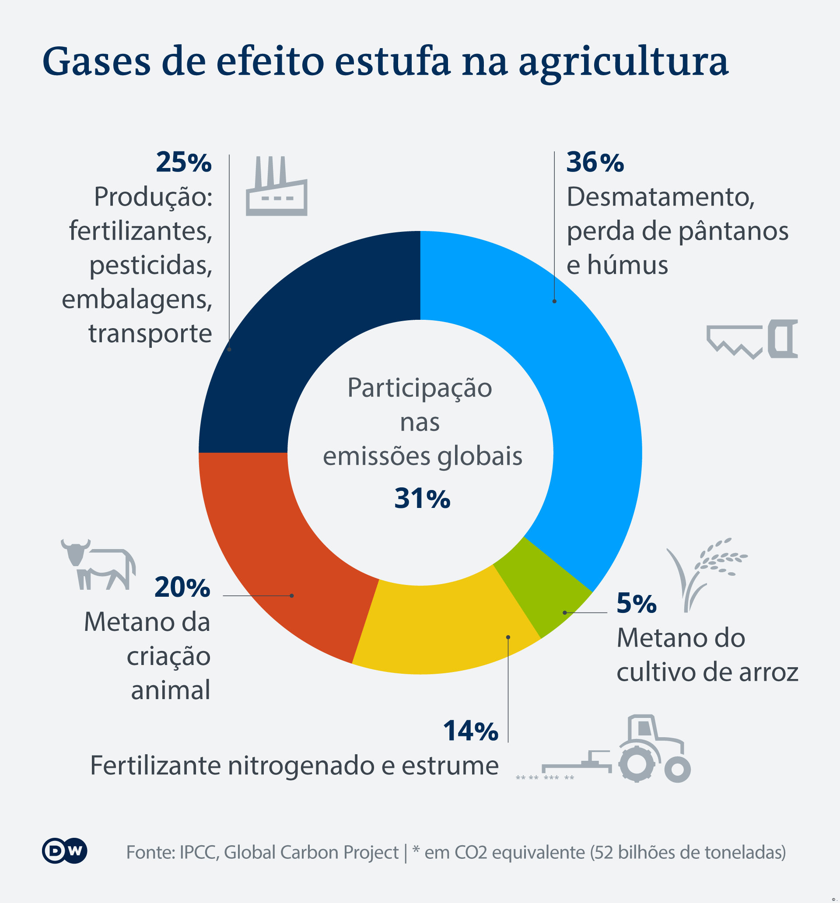
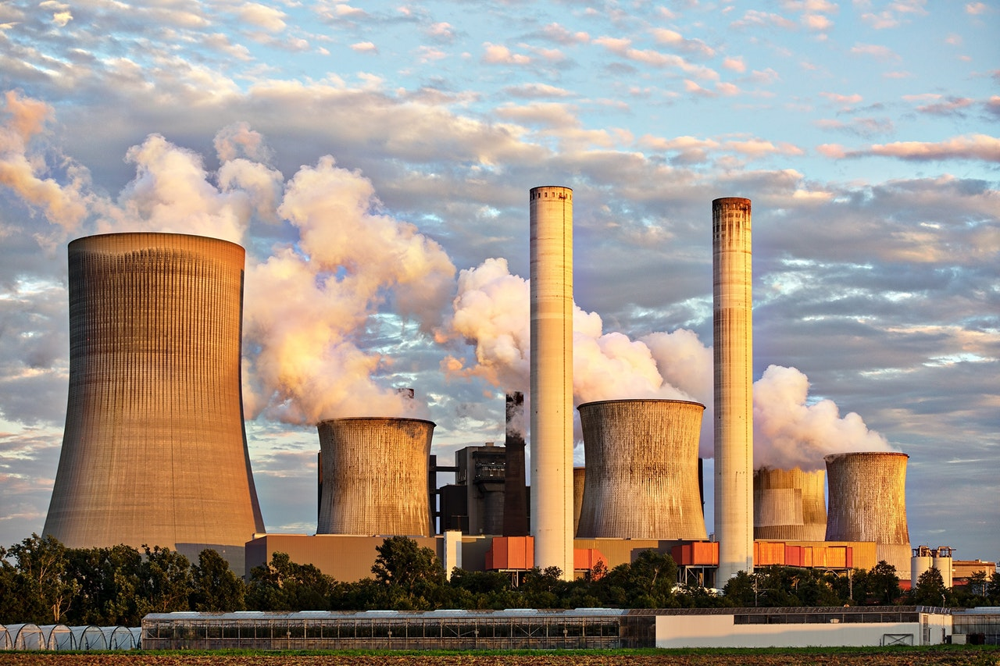

Emissões de Gases de Efeito Estufa
As emissões de dióxido de carbono (CO2) e metano (CH4) provenientes de combustíveis fósseis são as principais causas do aquecimento global.
Comparação entre duas décadas mostra desaceleração de 0,8%, mas montante não foi suficiente para conter disparada; Ipcc adverte que manter emissões pode levar a aquecimento global médio de 3,2 °C até 2100, mais que o dobro da meta prevista no Acordo de Paris; secretário-geral ressalta que mundo está a passos rápidos para desastre climático.
O Painel Intergovernamental sobre Mudanças Climáticas, Ipcc, lançou um novo relatório revelando que as emissões globais médias de gases de efeito estufa atingiram os níveis mais altos da história. No entanto, a taxa de crescimento diminuiu para 1,3% na década até 2019, dos 2,1% da década anterior.
Desmatamento
O desmatamento reduz a quantidade de árvores que absorvem CO2, contribuindo para o aumento dos níveis de gases de efeito estufa na atmosfera.
O desmatamento contribui para o aquecimento global ao liberar uma grande quantidade de carbono na forma de CO2 para a atmosfera. Quando uma floresta é derrubada e queimada para dar lugar a pastagem, agricultura ou outro uso da terra, ocorre essa liberação de carbono. Além disso, o desmatamento altera a quantidade de aerossóis e ozônio na atmosfera, mudando o balanço radiativo e aumentando a importância de manter a floresta em pé
O desmatamento, a exploração madeireira e os incêndios florestais associados aos eventos de El Niño cada vez mais frequentes e intensos, poderão aumentar significantemente as emissões de carbono oriundas de mudanças no uso do solo.
Todos os anos, a humanidade desmata 10 milhões de hectares de florestas, uma área equivalente ao tamanho de Portugal. A perda desses ecossistemas é devastadora para a vida selvagem e para os bilhões de pessoas que dependem das florestas para obter alimentos, água e outros bens essenciais.
Enquanto os países se preparam para atualizar suas promessas nacionais sobre o clima em 2025, uma parte fundamental do histórico Acordo de Paris sobre mudanças climáticas, os especialistas estão pedindo que incluam metas concretas para acabar com o desmatamento e restaurar as florestas. Sem essas medidas, dizem os especialistas, os países terão dificuldades para controlar uma crise climática que está quebrando recordes de temperatura e desencadeando um turbilhão de condições climáticas extremas em todo o mundo.
"As florestas não apenas sustentam uma rica biodiversidade e abastecem as sociedades e economias humanas, mas também desempenham um papel vital na estabilização do nosso clima", diz Mirey Atallah, chefe do setor de Adaptação e Resiliência às Mudanças Climáticas do Programa das Nações Unidas para o Meio Ambiente (PNUMA). "Se quisermos ter alguma esperança de desacelerar as mudanças climáticas, precisamos parar de desmatar."
Pecuária
A pecuária é responsável por uma quantidade significativa de emissões de metano, especialmente devido à digestão dos ruminantes.
A agropecuária contribui para o aquecimento global principalmente por meio da emissão de gases de efeito estufa, como metano e óxido nitroso, resultantes da digestão de ruminantes e do uso de fertilizantes. Além disso, o desmatamento para pastagens e cultivo de grãos libera carbono armazenado, exacerbando o problema. Delve em práticas sustentáveis poderia ser a chave para mitigar esses efeitos.
A agropecuária emite metano, principalmente através da digestão de gado, e óxido nitroso, devido ao uso excessivo de fertilizantes. O desmatamento, especialmente na Amazônia, não só libera carbono, mas também reduz a capacidade de absorção de CO₂ pelas florestas. O uso de terras para pastagens também pode levar à degradação do solo. Práticas como agroflorestas e manejo sustentável são alternativas que podem ajudar a reduzir essas emissões e promover uma agricultura mais responsável.
Indústria
As indústrias emitem grandes quantidades de poluentes e gases de efeito estufa, especialmente em processos de fabricação e produção de energia.
A indústria contribui para o aquecimento global principalmente por meio da emissão de gases de efeito estufa, como CO2 e metano. A queima de combustíveis fósseis em processos de produção e geração de energia é uma das principais fontes dessas emissões. Além disso, a produção de cimento, aço e produtos químicos é intensiva em energia e libera grandes quantidades de poluentes. O uso de refrigerantes e solventes também contribui, e as práticas de desmatamento para expansão industrial exacerbam o problema, reduzindo a capacidade da Terra de absorver carbono.
No mundo, o setor de energia é o maior responsável (34%) pelas emissões globais de GEE, segundo o 6º relatório do Painel Internacional sobre a Mudança do Clima (IPCC, na sigla em inglês); seguido pela indústria, com 24% das emissões; agricultura, florestas e uso da terra (AFOLU, na sigla em inglês) com 22%; transportes com 15%; e construção civil com 6% das emissões globais. No Brasil, as mudanças no uso da terra e de florestas são as principais fontes de emissões de GEE, representando cerca de 48% das emissões totais do país, de acordo com o Sistema de Estimativa de Emissões de Gases de Efeito Estufa (SEEG), ligado ao Observatório do Clima. A agropecuária aparece na 2ª posição, com 27%. O setor energético é o terceiro maior emissor de GEE do Brasil, com 18%. Já resíduos e indústria respondem por 4% e 3%, respectivamente.
